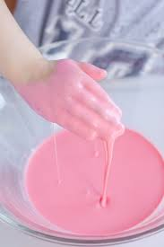

Home

Slimey Goop
Ever want something thats just slimey yet goopy? Look no further, this recipe will have slime and goop dripping out of your mouth
Ingredients
- 32oz containers of elmers glue
- 32oz containers of Borax (Sodium Tetraborate)
- 32oz Dihydorgen Monoxide
- Food Coloring of your choice, but purple preferred
Instructions
- The first step is to mix everything inside a large mixing bowl.
- Once it gets thick (approximately 10 mins), throw the spatuala out the window and get your hands in there
- After another 10 minutes of mixing, test the consistency by grabbing a wallop of the slimey goop, let it drip from your hand. It should take 5 seconds to hit the bowl, thats when its ready to eat.
- Enjoy!
These are jokes and no one should ACTUALLY eat or make any of these recipes.